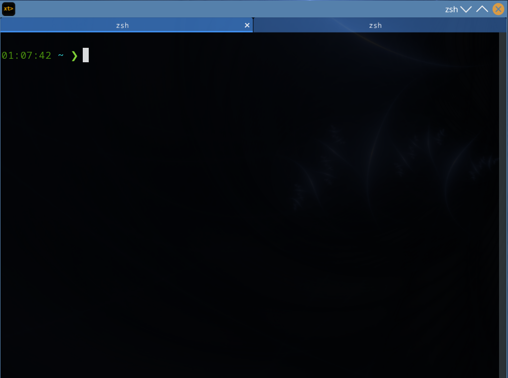

No tmux religion. No keybinding gauntlet. Just a fast, clean terminal with tabs that work, menus that make sense, and nothing you didn't ask for.

Built for people who want their terminal to be their window manager. If you just want tabs and a clean GUI, you're fighting the tool.
A preferences panel with more tabs than your actual terminal. Profiles, triggers, arrangements, pointer actions, advanced paste— buried under menus-within-menus. It works, but the configuration surface area is hostile.
You just wanted to change the font size.
Simple. Clean. Exactly what you want—until you try to use it on macOS, or outside its native desktop, or without pulling in half of GTK and its runtime dependencies.
So close. Fast, native, genuinely good rendering. Then you right-click expecting New Tab and find Copy and Paste at the top instead. Clipboard actions everyone has keyboard shortcuts for, sitting where the things you actually opened the menu for should be.
Priorities in weird places.
Alacritty, Kitty, Wezterm—powerful, fast, deeply configurable. But they assume you want to memorize keybindings for everything. Right-clicking for a context menu shouldn't feel like a concession.
xerotty is a cross-platform terminal emulator built on Dear ImGui and SDL3—no GTK, no Cocoa, no platform-specific widget toolkits. The same binary, the same behavior, the same menus on Linux and macOS.
It optimizes for the thing most terminals ignore: the GUI experience. Smooth tab navigation. Context menus where New Tab and New Window are at the top—the things you actually opened the menu for. Right-click that works like right-click. Scroll that works like scroll.
It stays out of your way by default: a single in-process
binary, no background services. When you want more, opt in—a headless
daemon can own your PTYs so sessions outlive the window,
attach over SSH to any box with one ad-hoc
user@host, and an MCP socket lets AI agents
drive the terminal (read the screen, open tabs, run commands) behind a
trust gate you control. The same one binary is the GUI, the daemon
(xerotty serve), and the thin client (xerotty connect).
xerotty is also the first real project being built with Xyphia.
enabled = "has_selection", shell-exec actions with $XEROTTY_SELECTION and $XEROTTY_CWD. Build it visually in the preferences dialog (drag to reorder, name your own submenus) or hand-write the file. New Tab and New Window come pre-bound at the top — not buried under clipboard items with shortcuts.$ doesn't drag the space with it..itermcolors to TOML with the included import tool. Switch at runtime.xerotty serve and your tabs live in a headless daemon — close the window, reattach later, nothing lost. Open a remote tab with one ad-hoc ssh user@host; the same lean binary auto-spawns on the far side. Heartbeat + reconnect ride out a slept laptop or dropped link and resync the scrollback.observe / propose / auto) keep an agent on a leash until you let it off.